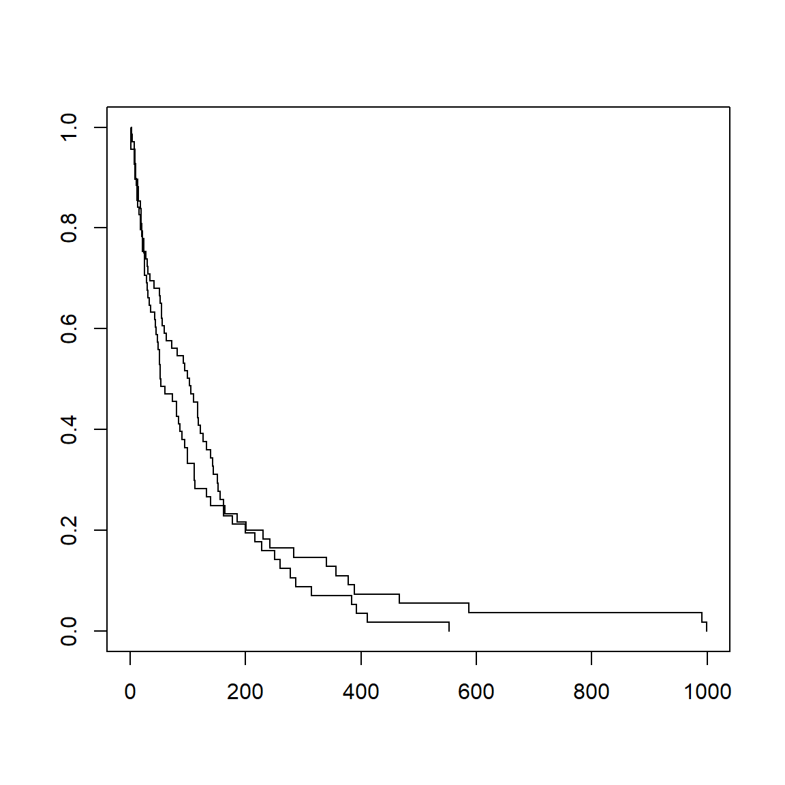
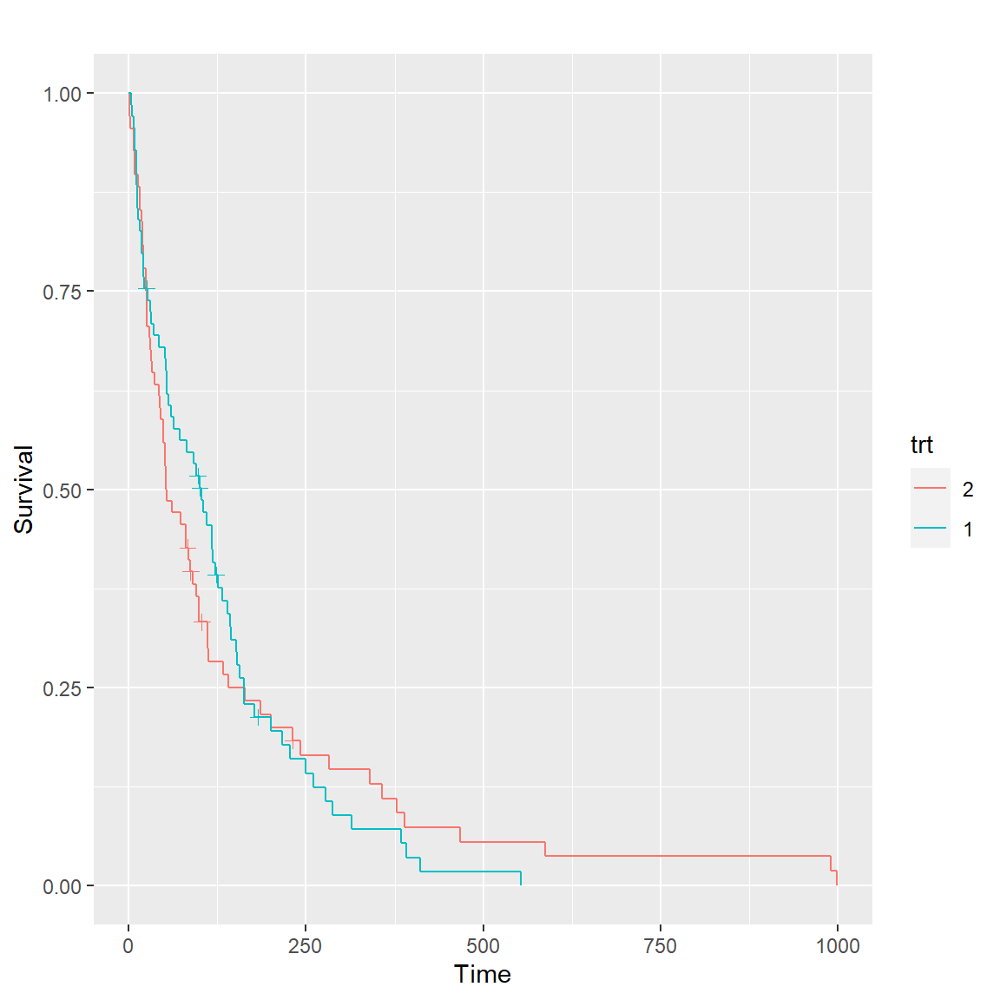
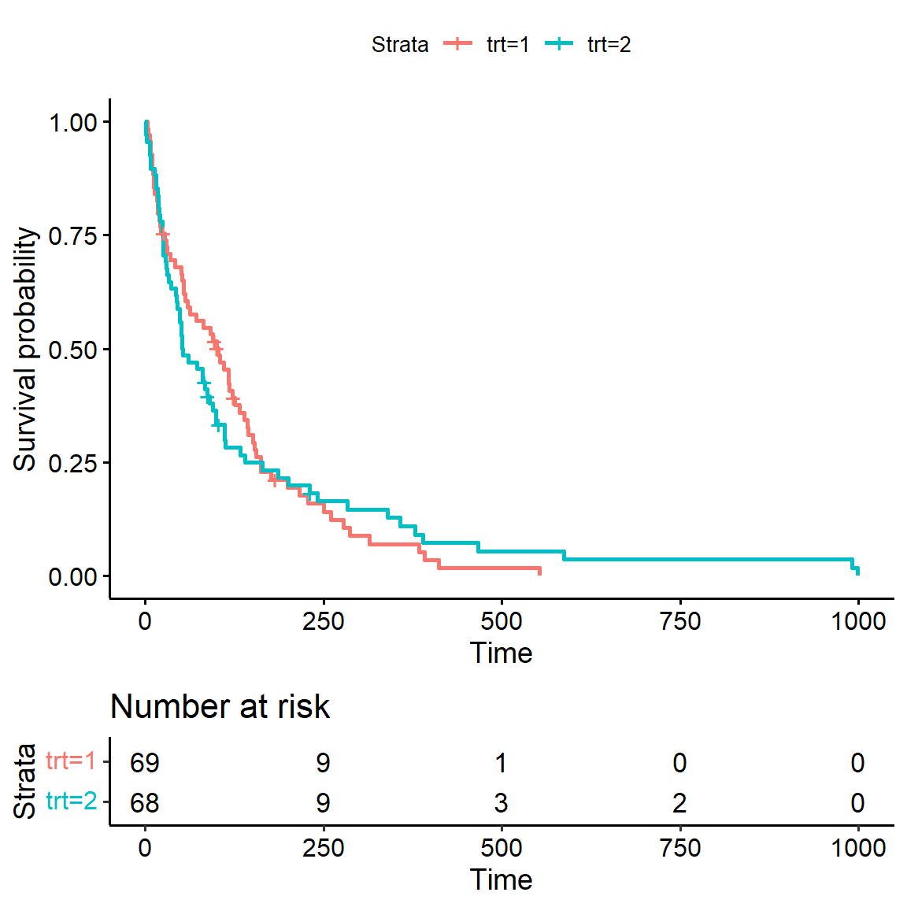
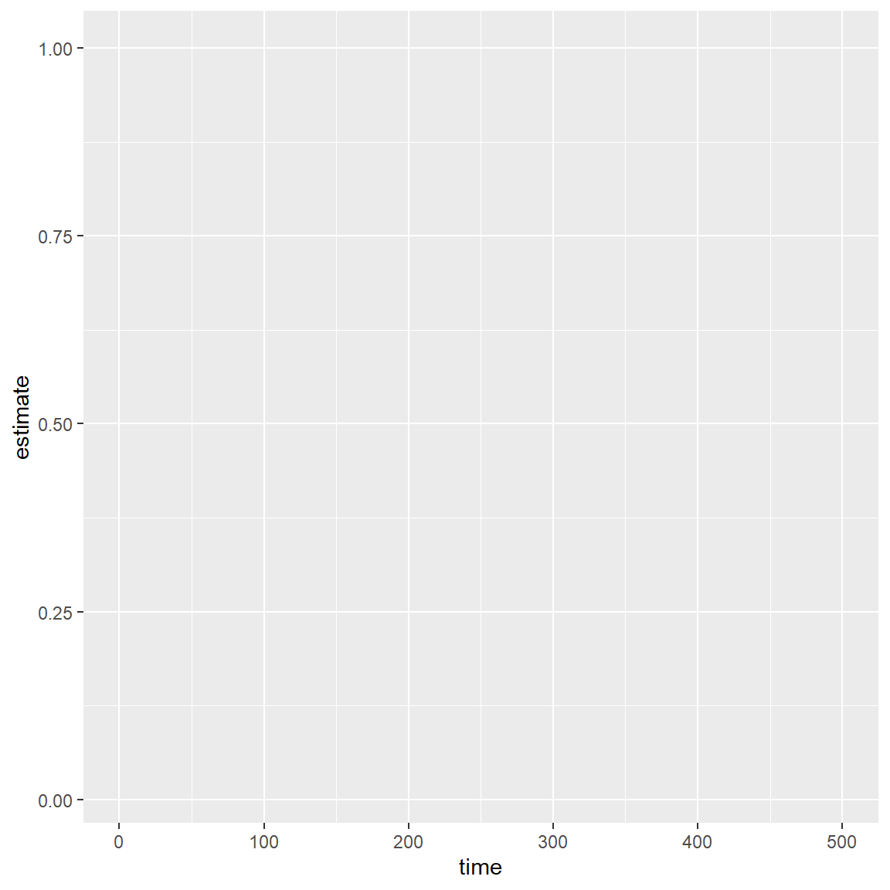
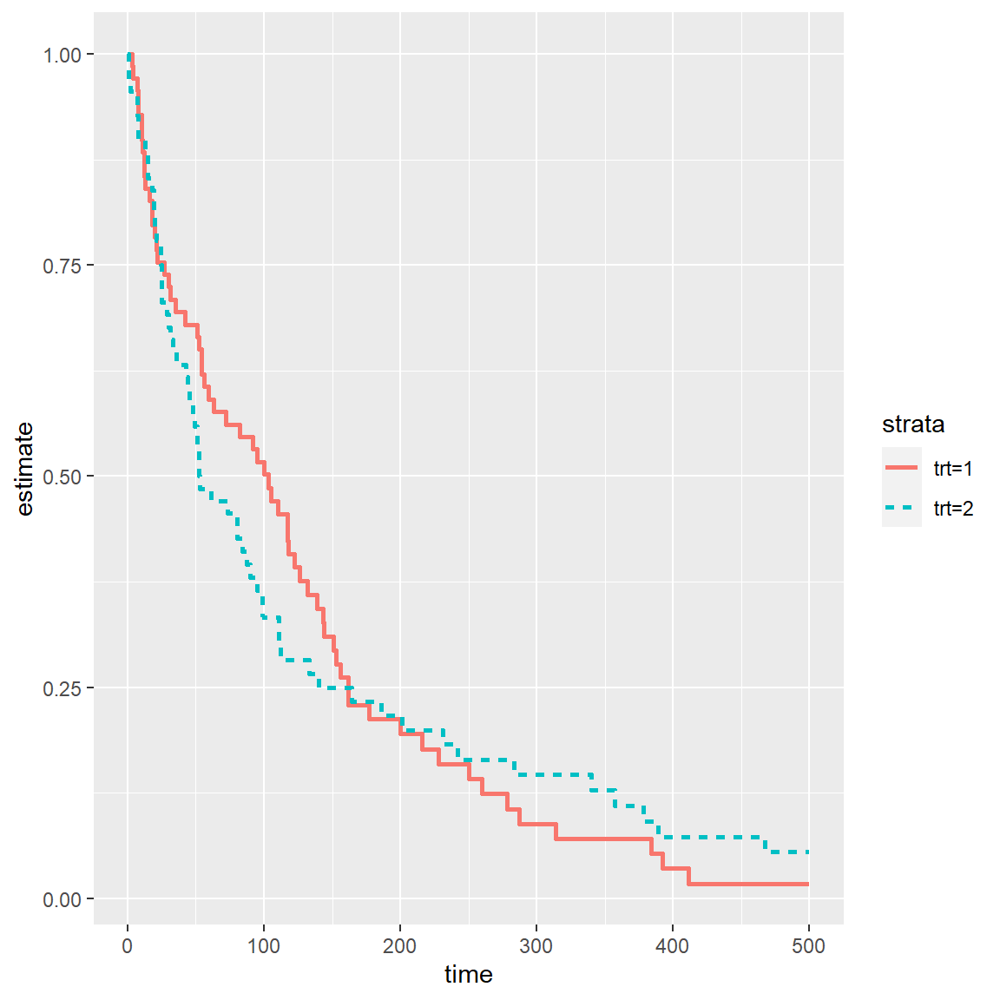
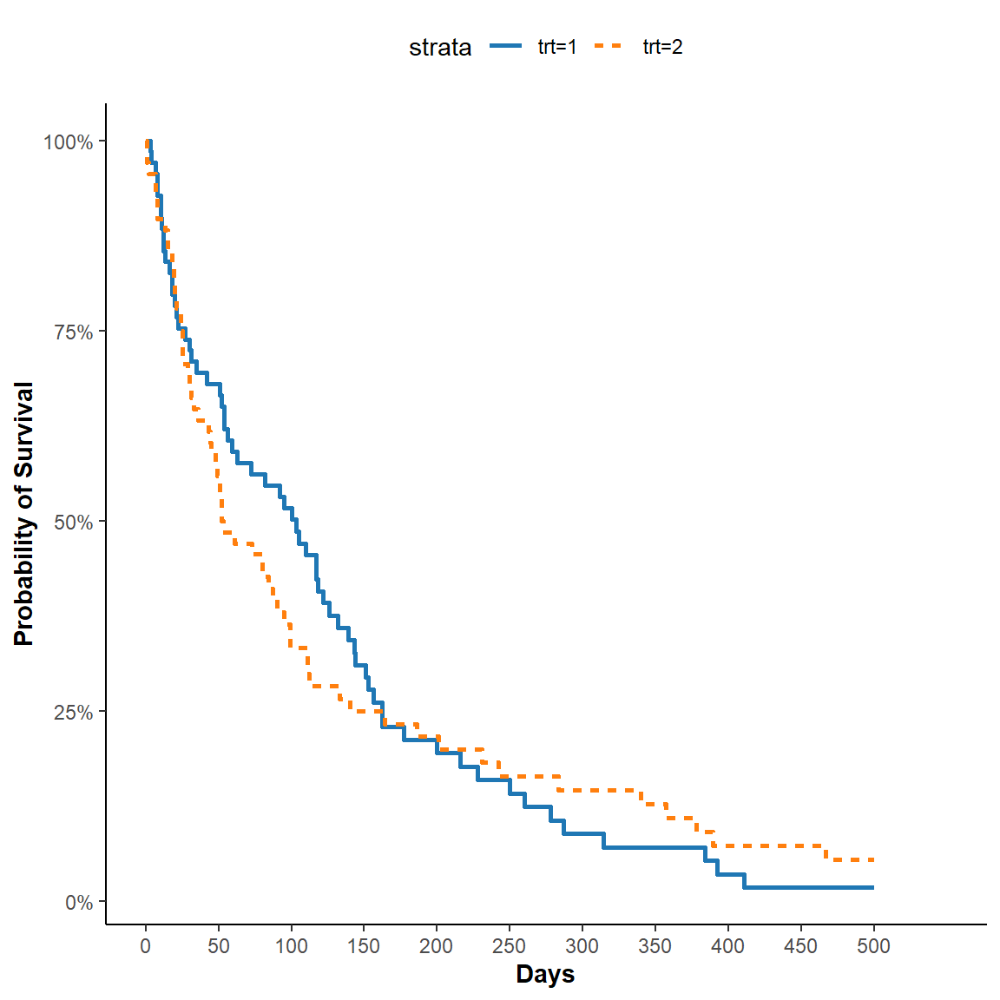
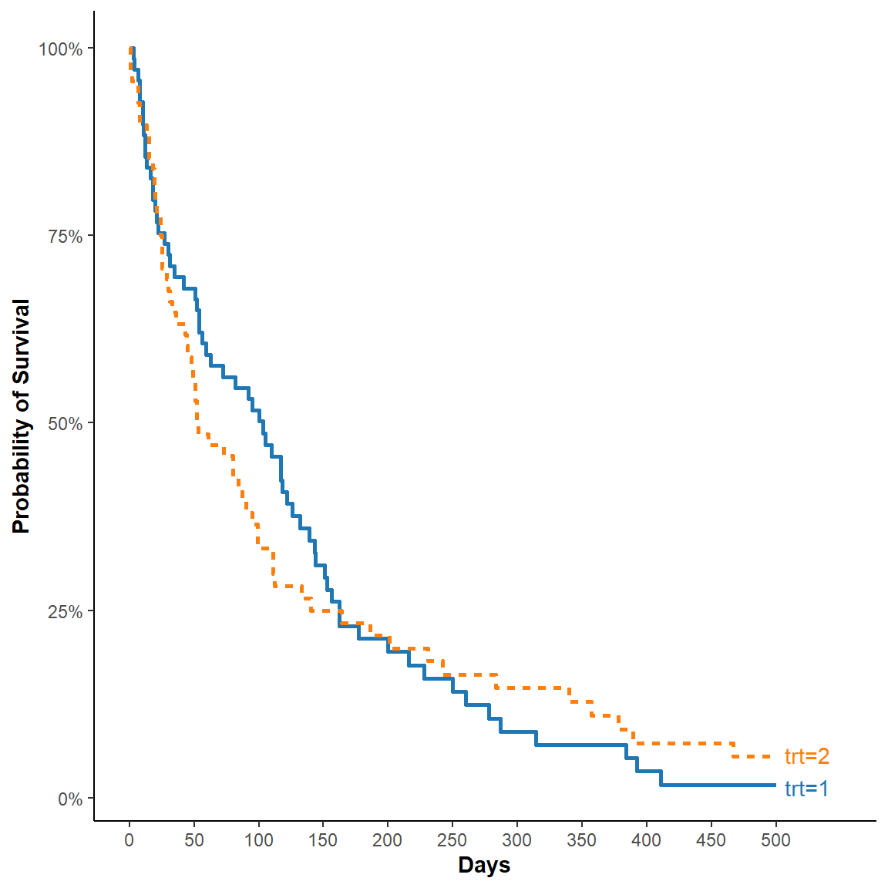
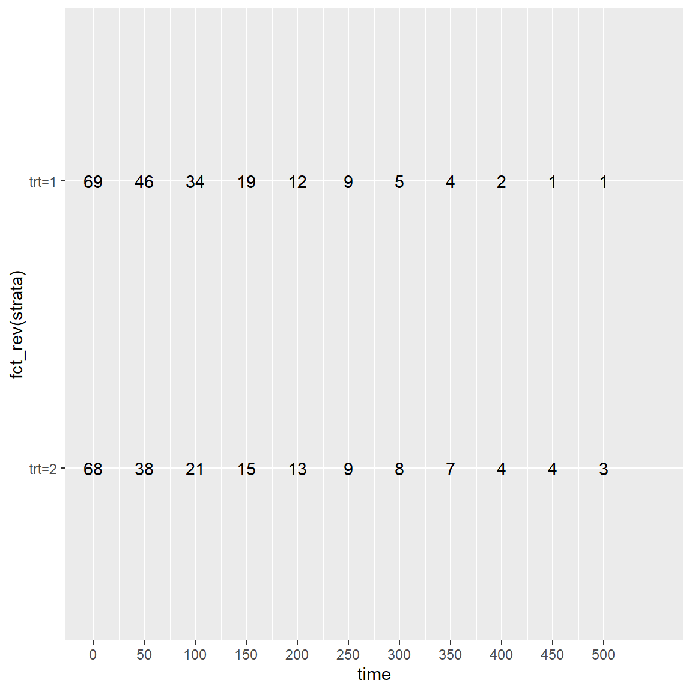
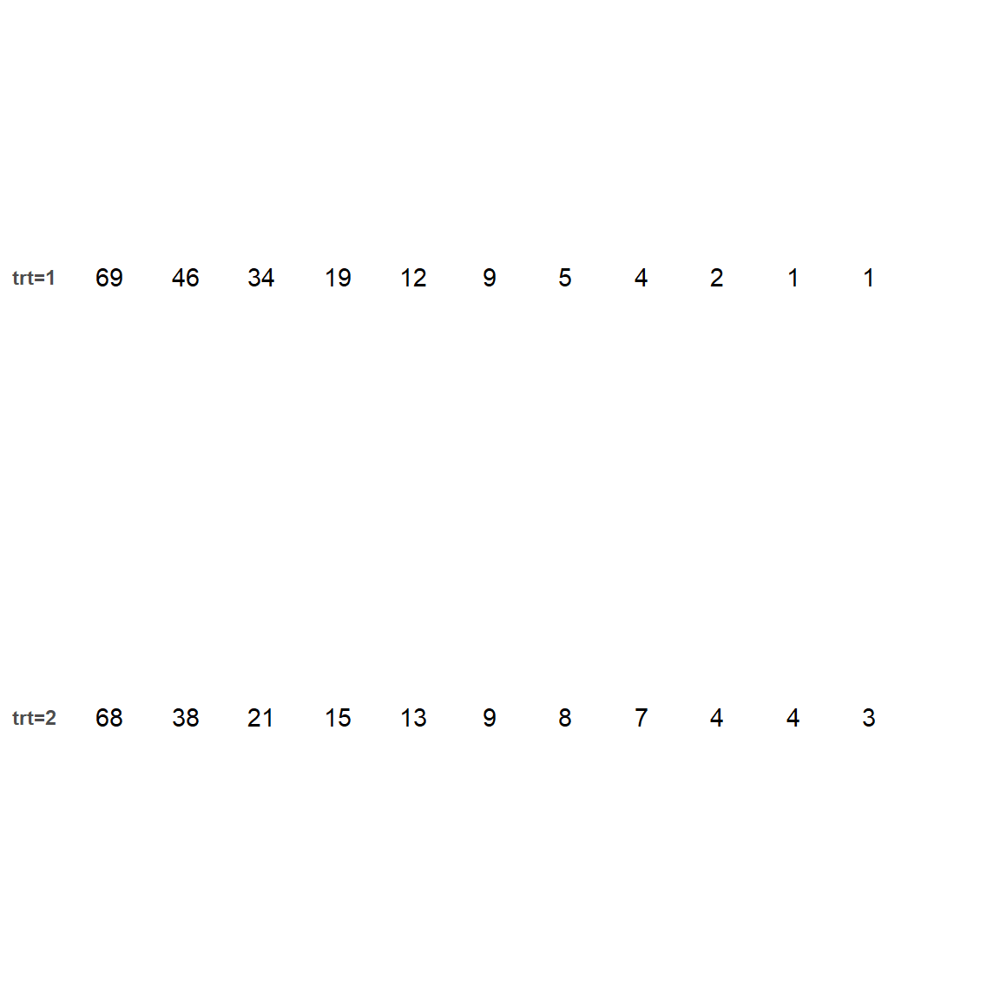

Publication Quality Kaplan-Meier Survival Curves using ggplot2
The Kaplan-Meier (KM) survival curves are a hallmark figure that is commonly used to illustrate “time to event” analysis in clinical research. In this illustrative example, I will be using the veterans data from the survival package to construct KM survival curves using ggplot2 and building the figure from basic geoms within the package.
visualization
survival analysis
Author
Michael Luu
Published
October 14, 2020
The Kaplan-Meier (KM) survival curves are a hallmark figure that is commonly used to illustrate “time to event” analysis in clinical research. In this illustrative example, I will be using the veterans data from the survival package to construct KM survival curves using ggplot2 and building the figure from basic geoms within the package. I will also provide examples of other publicly available packages that can facilitate in constructing KM figures that utilizes ggplot2. I believe this is a good exercise and illustrative example in potentially more advanced and little known techniques in ggplot2, as well as provide insight in the flexibility and capabilities that are available in this package.
The veterans data comes from a randomised trial of two treatment regimens for lung cancer. Let’s start off by loading the veterans data from the survival and have a look at the data that we are currently working with.
To handle ‘time to event’ data in R, we will first need to construct a survival object that encapsulates both the time to event information time in our dataset as well as the event/censoring variable status. We can then fit the data using the survfit() function by constructing a formula with our response variable (survival object) on the left of the ~ and the explanatory variable trt on the right. The summary() of the object from survfit() provides us the probability of survival for a given treatment over time.
fit <-survfit(Surv(time, status) ~ trt, data = df)summary(fit)
The base R plotting method provides us with a basic KM figure. We can generate the figure by using the plot() function on the fit object.
plot(fit)

The GGally package also includes ggsurv() which actually uses the ggplot2 in the backend to construct the figure.
GGally::ggsurv(fit)

An even further improved KM figure comes from the survminer package that includes a ‘Number at risk’ table that is commonly show in combination with the KM figure.
survminer::ggsurvplot(fit, data = df, risk.table = T)

The KM figure I’m constructing is going to be based on the survminer figure, that includes the secondary ‘Number at risk’ table.
We can start by estimating the survival estimates from day 0 to day 500, I chose 500 since it appears that survival trails off after 500 days and this is a method of truncating the figure. Then we can extract the survival estimates into a a structured tidy tibble.
s <-summary(fit, times =seq(0, 500, 1), extend = T)plot_data <-tibble('time'= s$time,'n.risk'= s$n.risk,'n.event'= s$n.event,'n.censor'= s$n.censor,'estimate'= s$surv,'std.error'= s$std.err,'strata'= s$strata)
Now that we have the ‘tidied’ data, we can start by constructing the base plot we will use to build from. We will map the x axis to time, the y axis to estimate, and the fill to strata.
p <-ggplot(plot_data, aes(x = time, y = estimate, color = strata))p

The primary geom in building the figure is geom_step()
p <- p +geom_step(aes(linetype = strata), size =1)p

This is pretty close to the plot that is provided from the GGally package already, we just need a few more steps to further clean up the axes, adjust the aesthetics, and to add a theme. I also further expanded the x axes to 550 to provide some additional room for curve annotations.
p <- p +scale_x_continuous(breaks =seq(0, 500, 50)) +scale_y_continuous(labels = scales::percent_format()) +theme_classic() +theme(legend.position ='top',axis.title =element_text(face ='bold')) +labs(x ='Days', y ='Probability of Survival') +coord_cartesian(xlim =c(0, 550)) + ggsci::scale_color_d3()p

We can further supplement this figure by adding markers on the curves using the ggrepel package. The simplest method I found to identify the coordinates of the ideal location of the annotations is by taking the last point of the curves by strata. Then we can use the geom_text_repel() function to add the text label to the curves accordingly. Now that we have the annotations on the figure, we can remove the legends to give the actual figure some additional room.
annotate_data <- plot_data %>%group_by(strata) %>%slice_tail(n =1)p <- p + ggrepel::geom_text_repel(data = annotate_data, aes(x = time, y = estimate, label = strata),xlim =c(500, NA)) +theme(legend.position ='none')p

Next, we can construct the ‘At risk’ table below the figure we just constructed. The table is actually a ggplot, where we are constructing a table of number of at risk plotted by time on the x axis and strata on the y axis. Since the time interval for the KM figure is per every 50 days, we will extract the ‘At risk’ data similarly on a per 100 days basis. The most important concept to remember is to make the scale of the x axis scale_x_continuous() is identical to the KM figure to have the alignment match between the two. The number at risk is then plotted using geom_text() with n.risk as the label.
table_data <- plot_data %>%filter( time %in%seq(0, 500, 50) ) t <-ggplot(table_data, aes(y =fct_rev(strata), x = time)) +geom_text(aes(label = n.risk)) +scale_x_continuous(breaks =seq(0, 500, 50), limits =c(0, 550))t

Now that we have a basis of the plot for the table, we can further customize it by adding a theme, and then further clean up the axes and the labels of the figure.
t <- t +theme(panel.background =element_blank(),axis.text.x =element_blank(),axis.ticks =element_blank(),axis.title =element_blank(),axis.text =element_text(face ='bold'))t

We now have 2 ggplot objects, p and t. The patchwork package is the ‘glue’ we need to put the two plots together.
Now we have the final figure! I hope this post was informative in the possibilities with ggplot2. The benefits of making this figure from scratch as opposed to the packages available are the ability to further customize the figure to meet your needs.